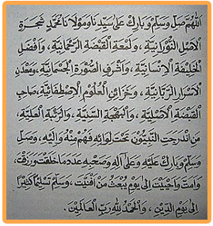

ALLAHUMMA SHALLI WASALLIM WABAARIK 'ALA SAYYIDINA WAMAULAANA MUHAMMADIN SYAJARATIL ASHLINUURANNIYYAH WALAM'ATIL QABDLATIRRAHMANIYYATI, WA AFDLALIL KHALIQATIL INSANIYYATI WAASYRAFISH SHUURATIL JASMANIYYATI, WAMA'DANILASRAARIR RABBAANIYYATI, WAKHAZAAINIL 'ULUUMIT ISHTHAFAAIYYATI. SHAAHIBIL QABDHATIL ASHLIYYATI. WALBAHJATISSANIYYATI WARRUTBATIL 'ALIYYATI MANINDARAJATIN NABIYYUNA TAHTA LWAAIHII. FAHUMMINHU WAILAIHI. WASHALLI WASALLIM WABAARIK 'ALAIHI WA'ALAA 'ALIHII WASHAHBIHI 'ADADAMAA KHALAQTA WARAZAQTA WAAMATTA WAAHYAITA ILAA YAUMI YUB'ATSU MAN AFNAITA, WASALLIM TASLIIMAN KATSIIRAA WALHAMDU LILLAAHI RABBIL 'AALAMIIN.
Artinya
Ya Allah curahkanlah kesejahteraan dan keselamatan serta barakah atas junjungan dan tuan kami Muhammad tumbuhan yang berasal dari cahaya kemilauan genggaman (Allah) yang bersifat belas kasih dan seutama-utama makhluk manusia, semulia-mulia rupa jasad dan pusat segala rahasia keTuhanan dan penyiapan segala ilmu terpilih, pemilik genggaman keaslian, kemilauan yang indah dan derajat yang luhur , yang semua nabi berteduh di bawah panjinya, maka para nabi bersumber dari padanya dan akan kembali kepadanya pula , Dan limpahkanlah pula kesejahteraan, keselamatan dan barakah atasnya dan segenap keluarga serta sahabat-sahabatnya sebanyak ciptaan dan rizqiMu, yang Engkau matikan dan Engkau hidupkan hingga hari dibangkitkan segala yang telah Engkau binasakan. Dan berilah keselamatan dan kesejahteraan sebanyak-banyaknya hingga hari kiamat. Dan segala puji bagi Allah , Tuhan seru sekalian alam.
Manfaat dan fadhilahnya
Sholawat Badawiyah adalah salah satu sholawat yang diriwayatkan Sayid Ahmad Badawi Ra.
Apabila anda dalam keadaan susah atau menghadapi bahaya khusus atau umum maka bacalah sholawat ini sebanyak-banyaknya. Insya Allah anda akan mendapatkan ketenagan batin.
Min Ba'dil Ulama, barang siapa membaca membaca shalawat ini 100 x dalam keaadaan suci dari hadats maka akan dimudahkan Allah SWT dalam segala urusan.
Siapa yang membaca sholawat Badawiyyah 3 x, maka akan mendapatkan pahala seperti pahalanya membaca "Dalaailul Khairat" sampai khatam. (Menurut hadrah al 'arif billah Al Habib Sayid "Ali ibn "Abdirrohman Al Habsyi dalam kitab Fadhilatus Shalawat).
Wallahu A’lam